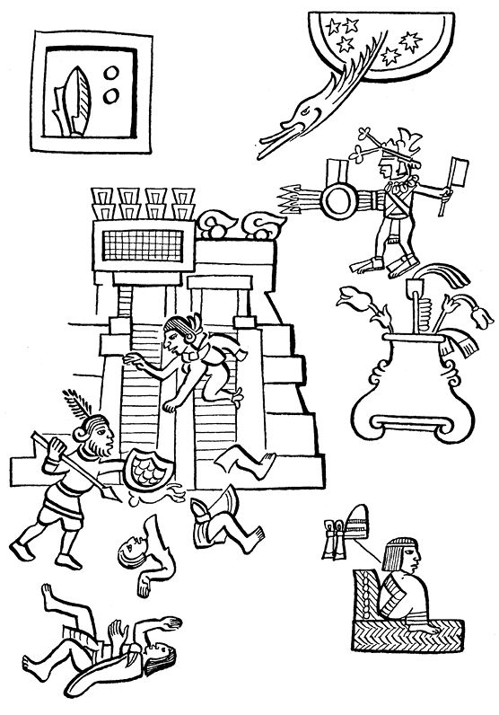

导 言
此前的十三章介绍了征服的情况，资料来自不同印第安人的记述，并按照史实的顺序对这些记述进行了编排。下面以最后综述的方式，更为简洁地向读者提供另一个印第安人对征服的记述，事实相似，但更具吸引力。
1528年左右，特拉特洛尔克的几位无名作者用纳瓦特尔语撰写了《墨西哥纪事》，现存于巴黎国家图书馆。它被编入“墨西哥民族编年史”丛书中，是我们这本《战败者的见闻》最古老的材料。此纪事一开始便叙述了西班牙人1519年来到墨西哥湾，就是现在委拉克鲁斯附近的地方。最后记述了墨西卡人首都的陷落，及其落入科尔特斯手中后的不幸遭遇。
但是，这是一部相对简短的文献，它很有可能是一部纯粹由印第安人向我们叙述的征服。下面我们呈献给读者的是由卡里巴依博士翻译成卡斯蒂利亚语的版本，并加上了副标题来表明印第安文本所叙述的有关征服的不同阶段。
科尔特斯的到来
蒙泰古祖玛派来使者
13-兔年。西班牙人在海上被人发现。
1-芦苇年。西班牙人来到特拉亚卡克的宫殿，这意味着科尔特斯队长的到来。
他们来到特拉亚卡克不久，蒙泰古祖玛派出特使前来欢迎，并送上几个贵金属圆盘，其中一个是黄色金属圆盘；另一个是白色金属圆盘、一面挂镜、一个金托盘、一个金罐、数把克查尔羽毛制的扇子、多个克查尔羽毛饰品和数个珍珠贝制的盾牌。
当着科尔特斯队长的面，特使叫人进行祭祀仪式。这下惹怒了队长，因为鲜血溅在他的“鹰剑”把手上，他把肇事者辱骂了一顿，还用剑狠狠地打了他一顿。欢迎他的人见状纷纷四下逃去。
蒙泰古祖玛真心诚意地命令将礼品献给队长，特使为此找到他，因为这是他的任务。
科尔特斯在特诺奇蒂特兰
不久科尔特斯来到特诺奇蒂特兰，时在克秋里月 8-风日。他们一到这里我们便献上了母鸡、鸡蛋、白玉米、白饼和喝的，还给他们的大鹿（马）喂了饲料。连柴火都送去了。
这些东西一部分是特诺奇蒂特兰人送的，另一部分是特拉特洛尔克人送的。
不久队长去了海岸，留下佩德罗·德·阿尔瓦拉多（绰号“太阳神”）。
托斯卡特尔节时在大神庙的屠杀
当时有人询问蒙泰古祖玛该以何种方式庆祝他们神的节日，他答道：
“给他穿上独有的服装，快去办吧。”
正在此时，“太阳神”阿尔瓦拉多下了命令：将特拉克奇卡尔卡特尔、蒙泰古祖玛和特拉特洛尔克的伊斯科瓦特辛捆好关起来！
与此同时，他们把一个叫作奈查瓦肯特辛的阿科尔瓦坎头人在土墙下绞死。
另外，纳乌特拉的国王科萨尔波波科特辛也丢了性命，他是被箭射中，还没咽气就被活活烧死了。
这样一来，特诺奇蒂特兰人封锁了“鹰门”，门一边的塔楼由特诺奇蒂特兰人把守，另一边由特拉特洛尔克人把守。
接着有人来通报装扮战神维奇洛波奇特利的准备情况。
装扮战神的人把装饰物都贴在战神身上，如纸制的服装和所有象征战神的衣服。
不久，墨西哥人引吭高歌，第一天就这样过去了。
翌日，他们又开始唱了起来，同时就有不少特诺奇蒂特兰人和特拉特洛尔克人被杀。
其实，这些又唱又跳的人手无寸铁，他们身上只披戴着披风、绿松石珍宝、唇饰、项圈、鹿蹄制成的项圈上的饰物、草鹭羽毛制成的头饰、老人的串铃——这些老人都是击鼓能手，身上带着葫芦，里面是烟末，他们经常吸食这种东西。
开始，西班牙人推搡着墨西哥人，用手打他们的耳光，接着便开始对歌唱者和观望者进行屠杀。
对我们推搡、虐杀进行了三个小时，杀人的场所就在大神庙的圣院里。
很快，西班牙人闯进了神庙的所有庙堂，杀死了所有的人。连给神庙运水的人、给马匹送草料的人、磨粮食的人、扫地的人、守护神庙的人都没逃脱被杀的命运。
但是，国王蒙泰古祖玛对与他在一起的特拉特洛尔克的弓箭库管事伊斯科瓦特辛和给西班牙人送吃的人说道：
“各位，我看够了！你们在做什么呢？我可怜的人民啊！……难道你们手里还有盾牌吗？难道你们还有棍棒吗？实际你们没有任何武器了！”
队长科尔特斯到海岸去了二十天，回来的时候，“太阳神”阿尔瓦拉多已经对我们进行了屠杀。
但科尔特斯到达的时候，没有遇上战争，他安然无恙地进入了特诺奇蒂特兰，直到翌日，我们全力向他攻击，于是战斗开始了。
“痛苦之夜”
结果，在特库依尔乌依特尔节的夜里，西班牙人逃跑了。在托尔特卡运河一带我们像疯了似的向他们进攻，他们很多人落水，溺死在运河里。
夜里他们落荒而逃，西班牙人首先在马萨特辛塔马尔科集合。
2-燧石年：这年蒙泰古祖玛去世，同时，特拉特洛尔克的弓箭库管事伊斯科瓦特辛也随之而去。
西班牙人离开那里后又在阿古埃克落脚，后来又从那里被赶了出来，只好在特奥卡尔维亚坎苟延残喘，从那里来到了索尔特佩克，结果又被赶出来，来到希特拉尔德佩克，后来又从那里到达德玛斯卡拉潘。从那里逃出来以后，碰到有人送他们母鸡、鸡蛋、脱粒玉米，总算有了喘息的机会。
后来他们到达了特拉斯卡拉。
当时瘟疫流行：病人咳嗽，浑身长满灼人的水痘。
西班牙人又打了回来
瘟疫稍有消退，西班牙人便启程来到特佩亚卡克，这是他们征服的第一个地方。
特拉瓦诺节（饮酒节）他们从那里离开，伊斯卡利节时到达特拉佩奇万。
200天后他们在特斯科科落脚，在那里驻扎了40天。
后来，他们紧跟着又回到希特拉尔德佩克，又来到特拉克潘并住进了那里的宫殿。
此时，萨尔托坎、瓜乌蒂特兰、特纳尤坎、阿斯卡波特萨尔科国、特拉克潘、克尤阿坎等地方的人也都汇聚在此。
连续7天平安无事。
西班牙人只在特拉克潘安营，不久他们又退却了，所有人一起来到特斯科科。
80天后他们去了瓦斯特佩克和瓜乌纳瓦克，即古埃尔纳瓦卡。从那里南下到索契米尔科。在那里，有不少特拉特洛尔克人战死。西班牙人又去了特斯科科，在那里又安营扎寨。在特拉里斯达卡巴，又有一些特拉特洛尔克士兵战死。
当科尔特斯来到特斯科科时，特诺奇蒂特兰发生内讧，人们相互残杀起来。
3-房屋年，西瓦克阿特尔、西克帕特辛和其他指挥官被杀，蒙泰古祖玛的两个儿子阿萨亚卡和索索佩瓦洛克也被杀。
还有，他们之间不断争吵，最后又互相残杀，这是头人被杀的重要原因。头人们还动员人民，企图说服他们给西班牙人送白饼、母鸡、鸡蛋。
杀人的人多是祭司、军队首领和长兄。被杀的是头人，他们十分恼怒。
头人们对凶手叫道：
“难道是我们杀人了吗？最近60天来在我们身边死了多少人！他们就在托斯卡特尔节期间动的手！……”
特诺奇蒂特兰被围
战争开始了，西班牙人向我们进攻，整整十天的进攻，接着出现了战船。第二十天，他们陆续把船集中到诺诺瓦尔科的一个叫作马萨特辛塔马尔科的地方。
后来船只向着伊斯塔卡尔克方向驶到这里。伊斯塔卡尔克人向西班牙人表示降服，于是他们也从那里来到这里。不久，他们把船开到阿卡奇南克。
当然，乌埃索特辛克人和特拉斯卡拉人也在路两边筑起了堡垒，特拉特洛尔克人也把他们的船分散开来，这些人乘船防卫诺诺瓦尔科和马萨特辛塔马尔科一带的道路。
但是，在索维尔蒂特兰和特佩亚卡克谁也没有船。当船开来的时候，唯一看守道路的就是我们特拉特洛尔克人。第二天，他们把船留在索洛克。
在乌伊特奇兰战斗进行了两天，此时正值特诺奇蒂特兰内讧期间，他们说道：
“我们的指挥官跑到哪里去了？难道他们来了放一枪就跑？他们只是以此表现自己的勇敢？”
很快他们逮捕了在前面与他们厮杀的四个人，并杀死了他们。这四个人是特拉卡特克的指挥官瓜乌诺奇特利、乌伊特萨瓦克的指挥官瓜潘、阿曼特兰的祭司和另一个特拉洛坎的祭司。就这样，特诺奇蒂特兰内部相互残杀，相互伤害。
西班牙人在来特卡曼的路上，对着我们放置了两门大炮，炮弹在鹰门轰然爆炸。
这时特诺奇蒂特兰人才和我们一起行动起来，他们手里捧着战神维奇洛波奇特利的神像进入了特拉特洛尔克，把神像放在阿马萨克的特尔坡奇卡里宫，即“青年之家”，他们的国王瓜乌特莫克特辛就住在阿卡柯尔克。
人群逃往特拉特洛尔克
事情到此算是告一段落。在这种情况下，普通百姓放弃了特诺奇蒂特兰，进入了特拉特洛尔克。他们躲在我们家里，很快挤满了我们的房子和我们的平台。
他们的首领和酋长叫道：
“墨西哥和特拉特洛尔克的弟兄们……
留给我们的东西已经不多了……我们只能守卫我们的房屋。
请大家不要争夺在我们土地上生产并贮存在储藏室的粮食。
这点玉米都是大家的活命粮。
你们的国王为你们还保存了一些盾牌、战徽、护胸牌、羽毛战旗、金耳环、精美宝石，这些都是你们的，都归你们所有了。
你们要勇敢，不要泄气。现在我们向何处去？
我们是墨西哥人！我们是特拉特洛尔克人！”
在那里指挥的人赶快收起人们给他们送来的战旗、金器和克查尔羽毛制品。
在特拉特洛尔克、在大街上、在房屋之间和集市上指挥官们不停喊叫，他们是：
希巴诺克、特尔特亚克、西瓦克阿特尔的助手、乌依纳瓦特尔的莫特尔奇乌、索奇特尔，来自阿克尓纳瓦克的人、来自阿纳瓦克的人、来自特拉克齐卡尔卡特尔的人、伊特斯波东奇、埃索瓦克特尔、特斯卡克阿克的首领克阿依乌伊特尔、米斯克阿特拉伊罗特拉克的瓦尼特尔、庙宇供需官滕提尔。这些人一到特拉特洛尔克就到处喊叫。
听到他们大喊的人有：克尤阿坎人、瓜乌蒂特兰人、杜尔蒂特兰人、奇古纳乌特拉人、特佩奇潘人、伊特斯尤卡人，这些各地来的头人都听到了特诺奇蒂特兰头人讲的话。
而在我们战斗的全部时间，却见不到一个特诺奇蒂特兰人。尤其在这里，在亚卡柯尔克、阿特斯卡潘、克阿特兰、诺诺瓦尔克、索索乌依蒂特兰和特佩亚卡克的各条道路上只有我们特拉特洛尔克人在战斗，在各条水道上也只有我们的人在战斗。
与此同时，在整个战斗期间，特诺奇蒂特兰人的指挥官则剪掉了自己的头发，他们的下级官员也一样，就连平时常戴羽毛头盔的瓜奇克和奥托米级别的军官这时也去掉了他们的头盔。
我们特拉特洛尔克人则护在特诺奇蒂特兰首领的周围，他们的女人不停地责骂各自的男人，使他们感到十分羞愧。女人们说道：
“你们就待在这里不动啦？……不感到害羞吗？从现在起任何时候再也不会有女人为你们打扮了！……”
特诺奇蒂特兰女人在特拉特洛尔克人面前泪水滂沱，寻求庇护。
城里人见此情况大声呼喊，但已看不见一个特诺奇蒂特兰人了。
特拉特洛尔克人，上至指挥官下至瓜奇克和奥托米级别的军官都忍受着折磨，他们倒在敌人的大炮和火绳枪下。
阿科尔瓦坎国王的口信
这时，阿科尔瓦坎国王特科柯尔特辛派遣的使团来到特拉特洛尔克，他们是：
特古科亚瓦卡特尔、德潘特莫科特辛、特斯卡克瓦卡特尔、基尤特卡特辛、特拉卡特科卡特尔·特米洛特辛、特拉克奇卡尔卡特尔·克尤瓦瓦特辛和特希努特科帕耐卡特尔·马特拉拉卡特辛。
阿科尔瓦坎国王特科柯尔特辛的使臣说道：
“阿科尔瓦坎国王特科柯尔特辛令我等到此，传达他的口信，下面便是他说的话：
‘墨西哥-特拉特洛尔克兄弟们：
大火在燃烧，折磨着你们痛苦不堪的身体和心灵。
我和你们一样，也受着大火的熬炼，忍受着心灵的折磨。
我这里还有什么呢？在我的包裹里，连披风的口袋都空空如也。因为不管到哪里都有人抢走我的东西。我的人民也都逃散了。
我还要说：
让特诺奇蒂特兰人随心所欲地干吧，他们早晚会灭亡的。我不会帮助他们，也不会对他们的话寄予任何希望。
你们有什么话要说？这不多的几天你们如何安排？听听我的话吧。’”
特拉特洛尔克头人开始议论使者传来的话，他们说：
“你的话让我们对你充满敬意，啊！指挥官，我们的兄弟，你们什么意思？难道阿科尔瓦坎的齐齐梅卡人是我们的父母吗？”
使臣就站在那里，特拉特洛尔克人听着他们说话：60天过去了，我们做的和你已经做的一样。现在，国王看到了，一切都被毁了，剩下的只是喊叫声：一些人向瓜乌蒂特兰人那样，躲了起来；另一些人像特纳尤坎人、阿斯卡波特萨尔科人或像克尤阿坎人那样离开了这里。
使臣接着说道：
“我只看到：特拉特洛尔克人在喊叫，我该怎么做呢？
我们国王内心还是满意的，那样做也出于他的意愿，做得不错。但他现在想离开这里！……啊！我们按照我们头人的命令和安排做了这一切！我们已经战斗了整整六十天！……”
特拉特洛尔克人被要求退让
一个叫作卡斯塔涅达的西班牙人来到一个叫作亚乌腾克的地方大嚷大叫，恫吓特拉特洛尔克人。陪伴他的是一群特拉斯卡拉人。他们冲着烽火台上的恰普尔特佩克的队长伊特斯帕朗基、两个特拉巴拉人和古埃萨卡尔特辛声嘶力竭地大叫。那个烽火台就在蓝色湖水防护墙的旁边。
他们叫道：
“你们过来几个人！”
印第安人自言自语：
“他会有什么事？我们去听听。”
接着印第安人登船，远远地对西班牙人说道：
“诸位有何贵干？”
特拉斯卡拉人问道：
“你们家住何处？”
还没等到回答又说道：
“很好，你们正是我们要找的人。你们过来！那个‘天神’队长要见你们。”
特拉特洛尔克人弃船登岸和西班牙人去了诺诺瓦尔克，走进“雾宫”。队长科尔特斯、马林辛、绰号叫作“太阳神”的阿尔瓦拉多和桑托瓦尔在场。当地的一些头人也正聚在那里交谈。他们对科尔特斯说道：
“特拉特洛尔克人到了，是我们把他们带来的。”
马林辛对他们说：
“你们过来。队长科尔特斯说了：
‘墨西哥人是怎么想的？那个叫瓜乌特莫克的人还是个孩子吧？
他们对孩子和女人都没有一点儿同情心吗？
老人们就应该遭受这些苦难吗？
特拉斯卡拉、乌埃索特辛克、乔卢拉、查尔克、阿科尔瓦坎、瓜乌纳瓦克、索契米尔科、米斯吉克、古伊特拉瓦克、谷鲁阿坎各国的国王与我聚在这里。’”
诸国王答道：
“难道特诺奇蒂特兰头人还在捉弄别人吗？其实他们的内心也在为自己人民的遭遇备受煎熬。随便特诺奇蒂特兰人吧，随他去吧……让他们自作自受吧！
墨西哥人从不尊重你们特拉特洛尔克人，你们用得着为他们焦虑吗？”
特拉特洛尔克使者回答在场的各国头人：
“各位大人说得不错。”
和科尔特斯结盟的各印第安国王说道：
“是的，我们的‘天神’大人您请听：让特诺奇蒂特兰人自己待着去吧，让他们自作自受去吧！您已经听到，这就是我们的话。”
“天神”科尔特斯答道：
“你们去和瓜乌特莫克说：你们已经同意，答应不再管特诺奇蒂特兰人了。我马上就去特奥卡尔维亚坎，也把你们的话告诉他们。我会让船开到克尤阿坎。”
听了科尔特斯的话，特拉特洛尔克人说道：
“我们应去哪里见特诺奇蒂特兰人？我们就剩下最后一口气了，让我们一次了断了吧！……”
后来，他们在船上与特诺奇蒂特兰人会谈并争执起来，相互喊声震天。仅仅把特诺奇蒂特兰人丢开不管是不可能的了。
战斗又开始了
最后，特诺奇蒂特兰人准备向我们进攻，他们在古埃波潘和克斯卡瓜克两地安营扎寨。他们用金属投枪向我们射击。向我们进攻的还有克尤瓦瓦特辛和其他四个人领导的队伍。
在水战方面，他们来到德索潘，在那里战斗了三天，然后我们离开那里。接着他们到达圣庭院，在那里又战斗了四天。
特诺奇蒂特兰人到达亚卡柯尔克，此时西班牙人从特里瓦坎大道赶来。
这便是战斗的情况。城市居民死了两千人，都是特拉特洛尔克人！那时我们特拉特洛尔克人做了一些架子，上面一排排挂上了头颅，总共有三个地方有这种架子，在特里兰卡尔克的圣院——也叫黑屋——里有一个，那里架子上串着西班牙人的头颅。
第二个架子在阿卡柯尔克，上面同样串着西班牙人的头颅和两匹马的头颅。
第三的地方是在萨卡特拉的西瓦克阿特尔女神庙前面，架子上串的都是特拉特洛尔克人的头颅。
事情就是这样，我们被赶跑了，而他们则在集市里安下营寨。
威武的大虎、雄壮的老鹰、伟大的武士特拉特洛尔克人就这样被战胜了。战争就此结束。
于此之前，特拉特洛尔克的妇女们也参加了战斗，她们把投枪射向敌人。为了打击入侵者，她们把战旗插在战场上。为了追击敌人，她们把裙子提到大腿上。
西班牙人则在集市的小庙宇上为自己队长撑起自制遮阳伞，还在庙宇上放置弩炮。在庙宇附近战斗持续了五天。
城市被围时的凄惨描述
这是我们经历过的事情，为我们亲眼目睹，令人惊讶：这种悲惨痛苦的命运难以述尽。

大街上到处是被折断的投枪，逝者的头发散落一地。房屋已成断壁残垣，墙壁被鲜血染成殷红。
在大街和广场上蛆虫到处蠕动，人的脑浆洒在墙壁上。河湖里流淌着血水，我们不得不去喝充满硝石气味的带血液体。
我们焦虑地拍打着用土坯建造的墙壁，墙上像网眼一样的弹痕是给我们留下的遗产。我们用木板支撑着它，但是，护板也不能使它孤独地长久屹立。
我们啃食着黄雀的骨殖，咀嚼着浓烈硝石味的绊根草，吞咽着土砖、蜥蜴、老鼠、泥土、蛆虫……
我们把刚放在火上的一点儿肉生食掉，后面的肉刚烤好就被别人在火旁抢食了。
我们每人都被标上了价格，青年、祭司、孩子、姑娘各有各价。
够了：一个穷人的价格仅值两把玉米粒，相当于十个掺杂了水虫的面饼。我们自己也只值二十个带硝石味的绊根草面饼。
黄金、玉石、精致毯子、克查尔羽毛，过去都很值钱的东西，现在却无人问津。
这些东西被扔在集市给那些守护弩炮的人。
瓜乌特莫克和其他被俘虏的人在一起，而看押俘虏的人是特拉卡特克的指挥官，那里经常有人把被俘者开膛破肚，后来瓜乌特莫克特辛也在那里被开膛破肚，最终身亡。
阿科尔纳瓦卡特尔的长官索奇特尔的口信
西班牙人将阿科尔纳瓦卡特尔的长官索奇特尔带来了，他原本在特诺奇蒂特兰有自己的房子。士兵们带着他走了二十天来到特拉特洛尔克集市并用箭逼他就范，后来他战死了。
情况是这样的：士兵们架着他的双肩一路走来，还带着一架弩炮、一门大炮。后来他们把武器放在出售焚香的地方，然后欢呼起来。
索奇特尔被带走之后，乌伊萨纳瓦克队长对瓜乌特莫克说道：
“索奇特尔给你带来一个口信。”
瓜乌特莫克和德潘特莫科商量后说道：
“你去找科尔特斯队长吧。”
在羁押索奇特尔期间没发生战斗，也没有俘虏任何人。
后来他们把索奇特尔关押在阿索克特辛科的西瓦克阿特尔女神庙里。
羁押期间，德潘特莫科特辛、克尤瓦瓦特辛和特米洛特辛对瓜乌特莫克说：
“我们的王子，西班牙人把我们的一个指挥官留了下来，他是阿科尔纳瓦卡特尔的索奇特尔，他是地方长官。他说他有口信带给你。”
瓜乌特莫克问道：
“你们有什么看法？”
大家顿时叫了起来，说道：
“把他带到这里来……他来对我们有利。我们用纸和熏香做了预测，去接他的人只要听听他的口信就行了。”
为此，乌伊斯纳瓦克队长瓦斯特克人跑去听听索奇特尔有什么话要说。
索奇特尔说道：
“‘天神’科尔特斯队长和马林辛有令：
‘瓜乌特莫克、克尤瓦瓦特辛和德潘特莫科，你们听着，
难道你们对穷人、对孩子、对老人一点儿也不同情吗？这里的事已经全都结束了。你们难道还要再空谈吗？
一切全结束了！
把长相白皙的女人交出来，把你们的白玉米、母鸡、鸡蛋、白饼全拿出来！现在还来得及，你们还有话要说？特诺奇蒂特兰人，你们如果不投降，就是死亡！……’”
乌伊斯纳瓦克队长把话传给了特拉特洛尔克诸头领，也传给了特诺奇蒂特兰国王瓜乌特莫克。听了阿科尔纳瓦卡特尔的索奇特尔的口信，特拉特洛尔克头领们商议了片刻后说道：
“你们怎么说？你们打算怎么办？”
特拉克奇卡尔卡特尔说道：
“你们和乌伊斯纳瓦克去说吧。”
求助于预言者
瓜乌特莫克向预言者问道：
“你们到这儿来，你们的预言书上都说了些什么？”
预言者也是个祭司，是一个精通预言书的人，他答道：
“我们的君主，实话相告：
我们要八十天做完的事情，现在只有四天的时间了，大概这是战神维奇洛波奇特利的安排，这四天不会发生什么事的，我们还能见到陛下。让我们用四天的时间做完原本需要八十天才能完成的事情吧。”
预言者说完便沉默不语了。新一轮的战斗开始了，这次战斗是由乌伊斯纳瓦克队长率领的。
最后我们大家向阿马萨克转移，直到那里也发生了战斗。于是人们四下散去，山坡上挤满了人，连水渠里都有人，各条道路的尽头都能看到人。
城市陷落
城市陷落，墨西哥人、特拉特洛尔克人就这样完结了。我们大家都拥挤在阿马萨克，丢盔卸甲连木棍都丢失了，也没有任何东西可吃，整晚大雨滂沱，每个人都全身湿透。
监禁瓜乌特莫克
现在，克尤瓦瓦特辛、德潘特莫科特辛、特米洛特辛和瓜乌特莫克特辛从水渠里逃出来，继续行走。三个人将瓜乌特莫克特辛带到科尔特斯队长和堂佩德罗·德·阿尔瓦拉多以及堂娜马林辛所住的行营前。
这些人被俘后，村民都来到他们的驻地观看，他们都穿着破衣烂衫，女人们几乎衣不蔽体。基督徒们四处搜查，甚至掀开女人的裙子，到处乱摸，连耳朵、胸部、头发也要查看。
村民只好走出家门四处逃散，有的躲到邻村，躲在角落里，躲在外村人的屋后。
城市陷落那年是3-房年（1521年），我们从特拉齐马克那个地方逃出的日子是1-长蛇日。
我们逃散期间，特拉特洛尔克的头领们都到瓜乌蒂特兰安定下来，他们是德潘特莫科特辛、克尤瓦瓦特辛和特米洛特辛等。
这些人曾是最高首领，威严英武，此时却穿着破衣烂衫，从他们前面走过。与在特诺奇蒂特兰一样，女人们只用一块破布盖在头上，用各种颜色的破布做成上衣遮体。
为此备受痛苦折磨的首领们和他们的同伴说道：我们又要受苦了！
一个穷苦的村民向北走，在阿科尔瓦坎的奥东特兰被人无耻地杀死。为此，首领们对死者十分同情，在商量了一会儿后，他们说道：
“走，我们去找队长求情去！”
命令交出黄金
此时，西班牙人正在搜寻黄金，盘查每一个人，审问他们是否有哪怕一点点黄金，这些黄金是否藏在盾牌里，或是藏在战徽里。问他们是否藏有唇饰、唇悬饰物、头饰物、项链坠或其他东西，然后再把抢来的东西集中起来。
搜查完毕，把一堆堆战利品再次集中，交给下面的指挥官：古埃萨卡尔特辛、乌伊特兹尔特辛、乌伊斯纳瓦克和珀特松特辛，然后再由他们把黄金交给驻在克尤阿坎的人。在克尤阿坎，他们说：
“我们的大人，我们的主人，您的臣民，在特拉特洛尔克的指挥官向大人乞求，他们说：
‘我们的大人您请听：
您的臣民正在受苦受难，他们在各村落，在大街小巷都吃尽苦头。
阿科尔瓦坎人和奥托米人也在嘲讽他们，有时还在无情地杀死他们。
我们是给您送东西来了，就是藏在耳饰和盾牌里的东西。’”
他们当着队长科尔特斯的面把带来的东西放在筐里，让他看。但科尔特斯和马林辛只看一眼就生气了，对来人说：
“这就是你们找到的东西？我们要找的是你们丢在托尔特卡运河里的东西。到底在哪里？快拿来！”
前来的人答道：
“瓜乌特莫克的东西交给了西瓦克阿特尔和乌伊兹纳瓦卡特尔，他们二位知道东西的下落，您去问他们吧。”
后来科尔特斯命令将来人戴上脚镣，关了起来。马林辛对他们说道：
“队长科尔特斯说了，叫你们回去，把你们的上司叫来。他很感谢你们。你们人民可能正在受苦，但正因此他们也正在辱骂你们的上司。
让特拉斯卡拉人回来吧，回到他们自己的家。你们回去对特拉斯卡拉的各位长官说，谁也不准去特诺奇蒂特兰，那里的家已经被‘天神们’征服了。你们快回去吧。”
对瓜乌特莫克动刑
特拉特洛尔克使者走后，西班牙人就来到了特诺奇蒂特兰的国王面前，想把他的嘴撬开。
他们用火烤瓜乌特莫克的脚。
天快亮的时候，他们把瓜乌特莫克带出来捆在一个柱子上，一个阿乌依索特辛的阿卡特里亚卡潘行宫里的柱子上。
在那里找到了宝剑和大炮，这原是我们主人的东西。
在古伊特拉瓦克东科的伊特斯波东奇行宫里取出了黄金。黄金找到后，又把我们的首领捆绑到克尤阿坎。
此时保存战神维奇洛波奇特利圣像的祭司去世了，于此之前曾有人询问过他战神、大祭司和大焚香人的衣物存在何方。
由此他们知道了这些衣物存放在萨尔托坎，由几个头人保存。
西班牙人到那里去取衣物。衣物到手，在马萨特兰的路上他们就掐死了两个人。
人们又回到特拉特洛尔克定居
4-兔年，普通百姓开始回到特拉特洛尔克定居。
不久，特米洛特辛也回到卡布尔蒂特兰，堂胡安·瓦瓦特辛回到阿提巴克。
但是，克尤瓦瓦特辛和德潘特莫科特辛在瓜乌蒂特兰去世。
当我们回到特拉特洛尔克时，只剩我们在那里生活。我们的主人基督徒们还没跟上来。他们驻扎在克尤阿坎，因此我们生活平静了一些。
在克尤阿坎他们吊死了乌依特兹罗波奇克国的国王马古伊索奇特尔，接着又绞死了谷鲁阿坎国的国王波索特辛。他们在那里绞死了这两位国王。
他们还唆使恶狗吃掉了瓜乌蒂特兰的特拉卡特卡特尔和黑屋大总管。
恶犬还吃掉了索契米尔科的几个人。
本来想主动投降的德兹克卡诺的埃卡特尔三智者也被恶狗吞噬了。他们来时还带着画书（抄本）。原本前来投降的有四个人，跑掉了一个，剩下三个在克尤阿坎被捉，后被恶犬吃掉。
当西班牙人到达克尤阿坎后，他们从那里出发来到各个村落。
每个人都分得了印第安人做他们的奴隶，充当礼品。
那时特诺奇蒂特兰的首领们也获得了释放。被释放的首领们来到了阿斯卡波特萨尔科。
在克尤阿坎西班牙人决定向麦斯蒂特兰开战，从那里再回到图拉。
接着队长率兵攻打瓦哈卡克。
后来还攻打了阿科尔瓦坎、麦斯蒂特兰和米丘阿坎……
不久又攻打了乌埃伊·莫连、瓜乌德马拉和德古安德佩克。
至此本节结束，此书成书经过我们已经讲过。